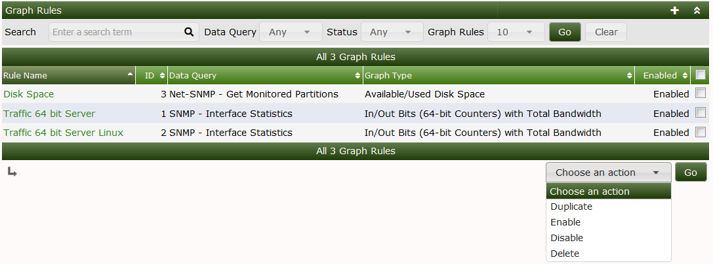
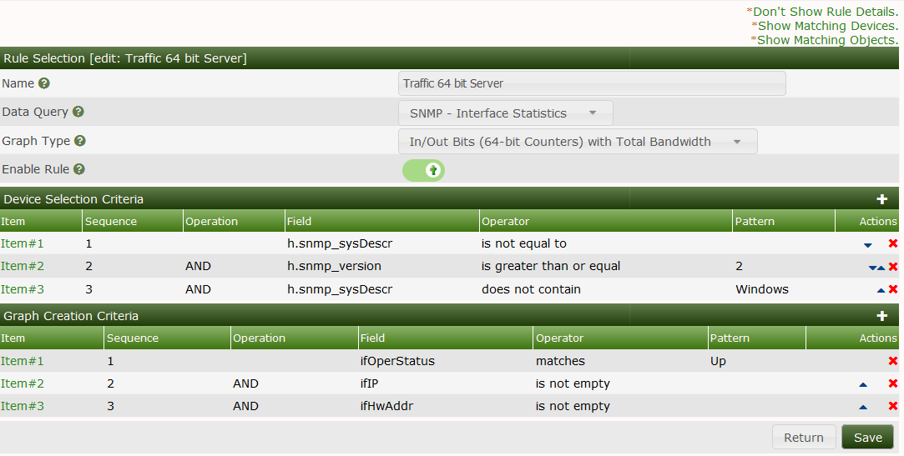
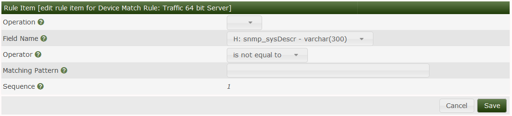
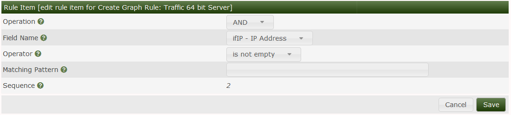
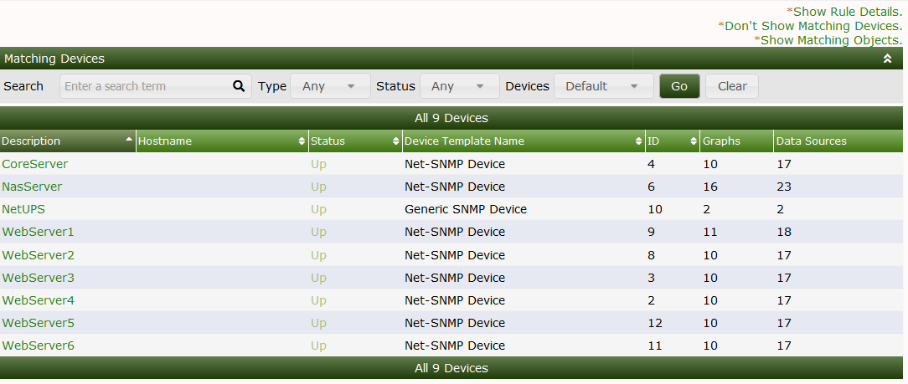
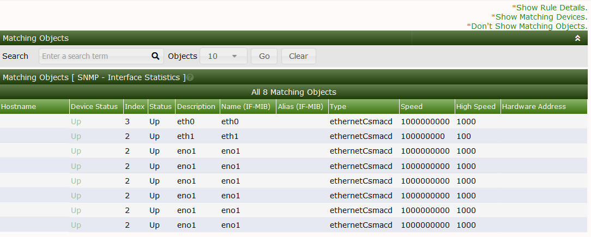

This section will describe Graph Rules in Cacti.
Graph rules are used by the Cacti automation process after a device has been identified and a template has been applied the next step is graph creation. Graph rules are processed from top to bottom.
The graph rule matches the graph template by looking at the data fields chosen that are available in the data query for example below we are creating graphs for interface traffic the data query has several fields available to match on.
You can see how these rules would take place by clicking the show matching objects link.

A practical example if you want to create graphs for interfaces that are in up/up status you would choose the ifOperstatus field and match the status to UP this would tell automation to create the graph for that interface only if the data query discovers the operational status is equal to up.
A device selection Criteria is also important Cacti needs a way to find which device it needs to match. In the below example we are matching any device that has an interface that is up and is not a Windows server.
You can preview which devices this will apply to by clicking the Show matching devices link.



This output shows us which devices match our devices rules this can help with tweaking rules as needed.

This output shows which interfaces,drives,sensors etc will be graphed based on the graph rules.

Copyright (c) 2004-2024 The Cacti Group